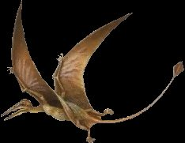

Hompejgji i Arbërit
Pterosaurët
DINOARBI
Njohuri për dinosaurët
Teoria finale për zhdukjen e dinosaureve
Teori tjera për zhdukjen e dinosaurev
Pterosauret kanë qenë një klasë e zvarranikeve fluturues të cilët kanë jetuar gjatë Erës së Mezozoikut së bashku me dinosauret. Hapja e krahëve të të vegjëlve ishte 30 cm, ku te të gjigantet madhësia e rregullt ka qenë më e madhe se 15.5 m. Pterosauret kanë qenë kurrizoret e parë që kanë fluturuar me krahë të formuar nga lëkura

Rhamforhynkus
Ka jetuar për 210 milion deri 135 milion vite më parë gjatë periodës së Tirasikut dhe periodës së Gjursikut.
Prodhuar më;
1 janar 2003
Kontakto me mua në e-mailin tim:
kapreboys6@hotmail.com